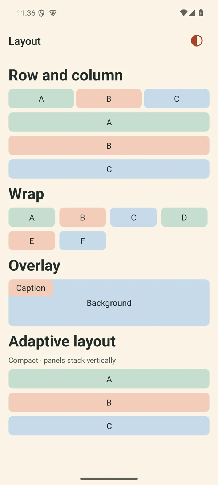

Build native mobile apps
in Rust.
Write a screen once in Rust. Erosion renders it with UIKit on iPhone and Android Views on Android. Your app lives in its own repository, with its own model, controls, and rules.

From a tap to a screen update
Tap Increment and the host sends the press to Rust. Erosion resolves the button’s binding to Msg::Increment. Your update function changes the count, and the host displays the new value.
Your Rust appModel · update · view
↓ screen description
Erosion runtimeControl bindings and screen changes
↓ native rendering
UIKitiOSAndroid ViewsAndroid
Inside the framework
Layout & styling ↗
Wrap controls, adapt to wider screens, and share light and dark themes.
Routes & effects ↗Follow an editor draft through Save and Back, then see how a Rust worker updates a live dashboard.
Device capabilities ↗Capture photos, record memos, and put saved places on an interactive map.